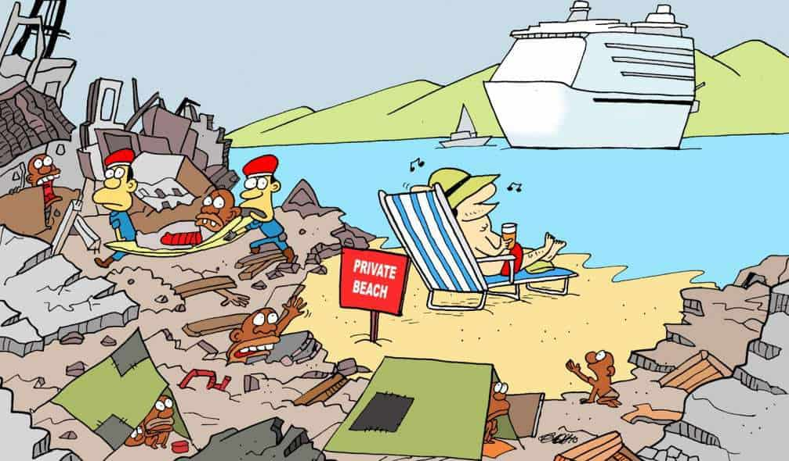

¿Por qué el turismo responsable es un reto?
El turismo responsable es una forma de turismo que se opone al turismo de masas. Su objetivo es proteger el planeta a lo largo del tiempo limitando la contaminación y protegiendo los recursos naturales del territorio. Hoy voy a presentarles el ecoturismo, que es una de las diferentes formas de turismo responsable.